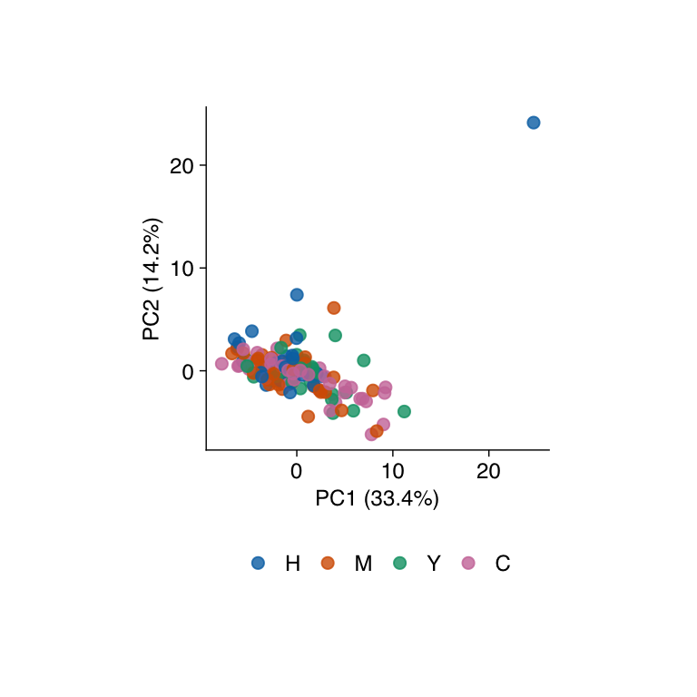
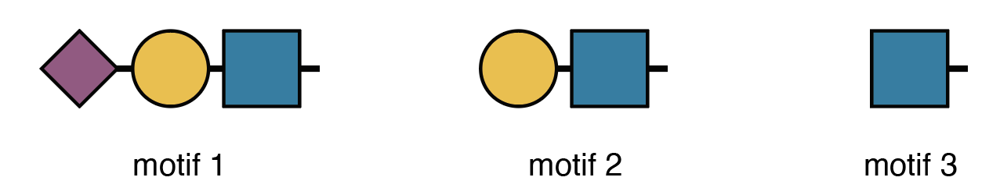

sample_info <- read_csv("data/sample-info.csv", show_col_types = FALSE) |>
transmute(study_id = sample, sample = maldi_pos, group)
raw_exp <- glyread::read_glyhunter(
"data/glyhunter.csv",
sample_info = sample_info,
sample_name_converter = function(x) str_split_i(x, "_", 3)
) |>
filter_col(group != "QC") |>
mutate_col(.sample = study_id, group = factor(group, levels = c("H", "M", "Y", "C")))
raw_exp <- raw_exp |>
mutate_row(
glycan_structure = glyanno::comp_to_struc(
glycan_composition, species = "Homo sapiens", glycan_type = "N",
structure_level = "topological", return_best = TRUE
)
) |>
filter_row(!is.na(glycan_structure)) |>
standardize_variable()Case Study: Glycomics
An end-to-end glycomics analysis with Glycoverse.
This vignette walks you through a complete glycomics analysis using glycoverse. We’ll explore the full spectrum of glycomics data analysis, from data loading and preprocessing to statistical analysis and visualization. We’ll also dive into advanced glycan structure analysis, including motif quantification and derived trait analysis. Ready to dive in? Let’s go!
Heads up: glycoverse is built on tidy principles throughout. If you’re new to tidyverse data analysis, we highly recommend checking out Hadley Wickham’s excellent R for Data Science. Trust us, it’s worth the investment!
Quick readiness check:
- What’s a
tibble? - How do you filter rows in a
tibble? - What’s the modern alternative to
forloops? - What’s the
|>operator? - What makes data “tidy”?
TL;DR
Run this code from the repository’s tutorials directory.
# Load the packages
library(tidyverse)
library(glycoverse)
library(SummarizedExperiment)# Preprocess the data
clean_exp <- auto_clean(raw_exp)
# Perform PCA
pca_res <- gly_pca(clean_exp)
autoplot(pca_res)
# Perform differential expression analysis
anova_res <- gly_anova(clean_exp)
get_tidy_result(anova_res, "main_test")
# Perform motif analysis
motifs <- c(
motif1 = "Neu5Ac(??-?)Gal(??-?)GlcNAc(??-",
motif2 = "Gal(??-?)GlcNAc(??-",
motif3 = "GlcNAc(??-"
)
motif_exp <- quantify_motifs(clean_exp, motifs)
motif_anova_res <- gly_anova(motif_exp)
get_tidy_result(motif_anova_res, "main_test")
# Perform derived trait analysis
trait_exp <- derive_traits(clean_exp)
trait_anova_res <- gly_anova(trait_exp)
get_tidy_result(trait_anova_res, "main_test")Loading the Packages
We first load the tidyverse package, as usual.
library(tidyverse)
#> ── Attaching core tidyverse packages ──────────────────────── tidyverse 2.0.0 ──
#> ✔ dplyr 1.2.1 ✔ readr 2.2.0
#> ✔ forcats 1.0.1 ✔ stringr 1.6.0
#> ✔ ggplot2 4.0.3 ✔ tibble 3.3.1
#> ✔ lubridate 1.9.5 ✔ tidyr 1.3.2
#> ✔ purrr 1.2.2
#> ── Conflicts ────────────────────────────────────────── tidyverse_conflicts() ──
#> ✖ dplyr::filter() masks stats::filter()
#> ✖ dplyr::lag() masks stats::lag()
#> ℹ Use the conflicted package (<http://conflicted.r-lib.org/>) to force all conflicts to become errorsJust like tidyverse, glycoverse is a meta-package that loads a collection of specialized packages all at once.
library(glycoverse)
#> Warning: package 'glyexp' was built under R version 4.6.2
#> Warning: package 'glyread' was built under R version 4.6.2
#> Warning: package 'glyclean' was built under R version 4.6.2
#> Warning: package 'glystats' was built under R version 4.6.2
#> Warning: package 'glyvis' was built under R version 4.6.2
#> Warning: package 'glydet' was built under R version 4.6.2
#> ── Attaching core glycoverse packages ────────────────────── glycoverse 0.3.1 ──
#> ✔ glyclean 0.17.1 ✔ glyparse 1.0.1
#> ✔ glydet 0.14.0 ✔ glyread 0.12.5
#> ✔ glydraw 0.9.0 ✔ glyrepr 1.2.0
#> ✔ glyexp 0.20.0 ✔ glystats 0.15.0
#> ✔ glymotif 1.0.1 ✔ glyvis 0.8.0
#> ── Conflicts ───────────────────────────────────────── glycoverse_conflicts() ──
#> ✖ glyclean::aggregate() masks stats::aggregate()
#> ✖ glyexp::cbind() masks base::cbind()
#> ✖ glyexp::colnames<-() masks base::colnames<-()
#> ✖ dplyr::filter() masks stats::filter()
#> ✖ lubridate::intersect() masks dplyr::intersect(), base::intersect()
#> ✖ dplyr::lag() masks stats::lag()
#> ✖ glyexp::rbind() masks base::rbind()
#> ✖ glyexp::rownames<-() masks base::rownames<-()
#> ✖ lubridate::setdiff() masks dplyr::setdiff(), base::setdiff()
#> ✖ dplyr::setequal() masks base::setequal()
#> ✖ lubridate::union() masks dplyr::union(), base::union()
#> ℹ Use the conflicted package (<http://conflicted.r-lib.org/>) to force all conflicts to become errorsThe Glycoverse data containers extend SummarizedExperiment, so we load it to use its standard accessors.
library(SummarizedExperiment)
#> Loading required package: MatrixGenerics
#> Loading required package: matrixStats
#>
#> Attaching package: 'matrixStats'
#> The following object is masked from 'package:dplyr':
#>
#> count
#>
#> Attaching package: 'MatrixGenerics'
#> The following objects are masked from 'package:matrixStats':
#>
#> colAlls, colAnyNAs, colAnys, colAvgsPerRowSet, colCollapse,
#> colCounts, colCummaxs, colCummins, colCumprods, colCumsums,
#> colDiffs, colIQRDiffs, colIQRs, colLogSumExps, colMadDiffs,
#> colMads, colMaxs, colMeans2, colMedians, colMins, colOrderStats,
#> colProds, colQuantiles, colRanges, colRanks, colSdDiffs, colSds,
#> colSums2, colTabulates, colVarDiffs, colVars, colWeightedMads,
#> colWeightedMeans, colWeightedMedians, colWeightedSds,
#> colWeightedVars, rowAlls, rowAnyNAs, rowAnys, rowAvgsPerColSet,
#> rowCollapse, rowCounts, rowCummaxs, rowCummins, rowCumprods,
#> rowCumsums, rowDiffs, rowIQRDiffs, rowIQRs, rowLogSumExps,
#> rowMadDiffs, rowMads, rowMaxs, rowMeans2, rowMedians, rowMins,
#> rowOrderStats, rowProds, rowQuantiles, rowRanges, rowRanks,
#> rowSdDiffs, rowSds, rowSums2, rowTabulates, rowVarDiffs, rowVars,
#> rowWeightedMads, rowWeightedMeans, rowWeightedMedians,
#> rowWeightedSds, rowWeightedVars
#> Loading required package: GenomicRanges
#> Loading required package: stats4
#> Loading required package: BiocGenerics
#> Loading required package: generics
#>
#> Attaching package: 'generics'
#> The following object is masked from 'package:lubridate':
#>
#> as.difftime
#> The following object is masked from 'package:dplyr':
#>
#> explain
#> The following objects are masked from 'package:base':
#>
#> as.difftime, as.factor, as.ordered, intersect, is.element, setdiff,
#> setequal, union
#>
#> Attaching package: 'BiocGenerics'
#> The following object is masked from 'package:dplyr':
#>
#> combine
#> The following objects are masked from 'package:stats':
#>
#> IQR, mad, sd, var, xtabs
#> The following objects are masked from 'package:base':
#>
#> anyDuplicated, aperm, append, as.data.frame, basename, cbind,
#> colnames, dirname, do.call, duplicated, eval, evalq, Filter, Find,
#> get, grep, grepl, is.unsorted, lapply, Map, mapply, match, mget,
#> order, paste, pmax, pmax.int, pmin, pmin.int, Position, rank,
#> rbind, Reduce, rownames, sapply, saveRDS, table, tapply, unique,
#> unsplit, which.max, which.min
#> Loading required package: S4Vectors
#>
#> Attaching package: 'S4Vectors'
#> The following objects are masked from 'package:lubridate':
#>
#> second, second<-
#> The following objects are masked from 'package:dplyr':
#>
#> first, rename
#> The following object is masked from 'package:tidyr':
#>
#> expand
#> The following object is masked from 'package:utils':
#>
#> findMatches
#> The following objects are masked from 'package:base':
#>
#> expand.grid, I, unname
#> Loading required package: IRanges
#>
#> Attaching package: 'IRanges'
#> The following object is masked from 'package:lubridate':
#>
#> %within%
#> The following objects are masked from 'package:dplyr':
#>
#> collapse, desc, slice
#> The following object is masked from 'package:purrr':
#>
#> reduce
#> Loading required package: Seqinfo
#> Loading required package: Biobase
#> Welcome to Bioconductor
#>
#> Vignettes contain introductory material; view with
#> 'browseVignettes()'. To cite Bioconductor, see
#> 'citation("Biobase")', and for packages 'citation("pkgname")'.
#>
#> Attaching package: 'Biobase'
#> The following object is masked from 'package:MatrixGenerics':
#>
#> rowMedians
#> The following objects are masked from 'package:matrixStats':
#>
#> anyMissing, rowMedians
#> The following object is masked from 'package:glyexp':
#>
#> samplesReading the Data
These serum measurements come from the liver disease study by Fu et al., Nature Communications 17, 1885 (2026).
The paper reports the serum N-glycomics raw data under GlycoPOST accession GPST000584. The GlyHunter export used here contains one row per glycan composition and one column per MALDI plate position. The sample sheet links each position to a sample ID and a liver condition. Download glyhunter.csv and sample-info.csv into a folder named data in your R working directory, or run the examples from the repository’s tutorials directory.
For example, the column A1-12_0_A1_1 corresponds to position A1. Use the position as the import key so glyread can align the sample sheet with the assay columns, then label the columns with the study sample IDs.
sample_info <- read_csv("data/sample-info.csv", show_col_types = FALSE) |>
transmute(study_id = sample, sample = maldi_pos, group)
raw_exp <- glyread::read_glyhunter(
"data/glyhunter.csv",
sample_info = sample_info,
sample_name_converter = function(x) str_split_i(x, "_", 3)
) |>
filter_col(group != "QC") |>
mutate_col(.sample = study_id, group = factor(group, levels = c("H", "M", "Y", "C")))After removing the six quality-control runs, 144 samples remain. The groups are healthy controls (H), hepatitis (M), cirrhosis (Y), and hepatocellular carcinoma (C). For the motif and trait analyses below, assign each composition the best matching human N-glycan topology in GlyDB and retain matched compositions. These structures are database-based assignments.
raw_exp <- raw_exp |>
mutate_row(
glycan_structure = glyanno::comp_to_struc(
glycan_composition, species = "Homo sapiens", glycan_type = "N",
structure_level = "topological", return_best = TRUE
)
) |>
filter_row(!is.na(glycan_structure)) |>
standardize_variable()The imported raw_exp object is a GlycomicSE object, a specialized SummarizedExperiment for glycomics data. It manages three key components:
- Abundance assay: quantitative data with samples as columns and variables as rows
- Column data: sample metadata (group, batch, demographics, etc.)
- Row data: feature metadata (glycan compositions, glycan structures, etc.)
You can access these components with assay(), colData(), and rowData().
assay(raw_exp)[1:5, 1:5]
#> S2001 S2002 S2003 S2004 S2005
#> Hex(3)HexNAc(3) 1354.352 1472.504 1311.722 1521.296 1373.607
#> Hex(3)HexNAc(7) 3315.779 2903.602 3057.763 NA 1706.758
#> Hex(5)HexNAc(2) 6940.940 4349.991 4879.541 4372.574 3533.398
#> Hex(6)HexNAc(4)NeuAc(2) 4437.816 3142.817 3020.503 3776.238 3182.280
#> Hex(4)HexNAc(3) 1346.274 1184.083 1056.709 1448.944 1259.690as_tibble(colData(raw_exp))
#> # A tibble: 144 × 2
#> study_id group
#> <chr> <fct>
#> 1 S2001 H
#> 2 S2002 H
#> 3 S2003 C
#> 4 S2004 M
#> 5 S2005 C
#> 6 S2006 M
#> 7 S2007 M
#> 8 S2008 C
#> 9 S2009 Y
#> 10 S2010 H
#> # ℹ 134 more rowsas_tibble(rowData(raw_exp))
#> # A tibble: 66 × 2
#> glycan_composition glycan_structure
#> <comp> <glydb_st>
#> 1 Hex(3)HexNAc(3) GlcNAc(??-?)Man(??-?)[Man(??-?)]Man(??-?)GlcN…
#> 2 Hex(3)HexNAc(7) GlcNAc(??-?)[GlcNAc(??-?)]Man(??-?)[GlcNAc(??…
#> 3 Hex(5)HexNAc(2) Man(??-?)[Man(??-?)]Man(??-?)[Man(??-?)]Man(?…
#> 4 Hex(6)HexNAc(4)NeuAc(2) Neu5Ac(??-?)Gal(??-?)GlcNAc(??-?)Man(??-?)[Ne…
#> 5 Hex(4)HexNAc(3) Gal(??-?)GlcNAc(??-?)Man(??-?)[Man(??-?)]Man(…
#> 6 Hex(5)HexNAc(4)dHex(2) Fuc(??-?)Gal(??-?)GlcNAc(??-?)Man(??-?)[Gal(?…
#> 7 Hex(3)HexNAc(3)dHex(1) GlcNAc(??-?)Man(??-?)[Man(??-?)]Man(??-?)GlcN…
#> 8 Hex(3)HexNAc(4) GlcNAc(??-?)Man(??-?)[GlcNAc(??-?)Man(??-?)]M…
#> 9 Hex(5)HexNAc(5)NeuAc(1) Neu5Ac(??-?)Gal(??-?)GlcNAc(??-?)Man(??-?)[Ga…
#> 10 Hex(4)HexNAc(5)dHex(1)NeuAc(1) Neu5Ac(??-?)Gal(??-?)GlcNAc(??-?)Man(??-?)[Gl…
#> # ℹ 56 more rowsFor a deeper dive into Glycoverse data containers, check out Get Started with glyexp.
Data Preprocessing
Raw quantification data needs preprocessing before analysis—that’s just a fact of life in omics. Typical steps include normalization, missing value imputation, and batch effect correction. Rather than making you implement these tedious steps manually, glyclean provides a comprehensive preprocessing pipeline. Just call auto_clean() on your GlycomicSE object and you’re good to go.
clean_exp <- auto_clean(raw_exp)
#>
#> ── Removing variables with too many missing values ──
#>
#> ℹ Applying preset "discovery"...
#> ℹ Total removed: 10 (15.15%) variables.
#> ✔ Variable removal completed.
#>
#> ── Imputing missing values ──
#>
#> ℹ Imputation method: `impute_miss_forest()`
#> ℹ Reason: default for "glycomics" with n_samples > 100.
#> ✔ Imputation completed.
#>
#> ── Aggregating data ──
#>
#> ✔ Aggregation completed.
#>
#> ── Normalizing data ──
#>
#> ℹ Normalization method: `normalize_total_area()`
#> ℹ Reason: default for "glycomics".
#> ✔ Normalization completed.
#>
#> ── Correcting batch effects ──
#>
#> ℹ Batch column batch not found in sample_info. Skipping batch correction.
#> ✔ Batch correction completed.Your data is now analysis-ready!
Want to customize the preprocessing steps? See Get Started with glyclean for the full toolkit.
Statistical Analysis and Visualization
Time for the fun part—statistical analysis and visualization! We’ll use glystats for the number crunching and glyvis to make sense of the results visually.
Let’s kick off with PCA to get a bird’s-eye view of our data structure.
plot_pca(clean_exp) # from `glyvis`
glyvis isn’t designed for publication-ready figures, but it’s perfect for quick exploratory visualization. Behind the scenes, plot_pca() calls gly_pca() from glystats and renders the results.
You can also break this down into separate steps:
pca_res <- gly_pca(clean_exp) # from `glystats`
autoplot(pca_res) # from `glyvis`
# you can also use `plot_pca(pca_res)`We actually recommend the two-step approach, since it gives you more flexibility with the results. You can create custom ggplot2 visualizations for publications or extract the underlying data when reviewers ask for it.
glystats covers virtually all standard omics analyses. All functions follow the same naming pattern: gly_xxx()—think gly_anova(), gly_ttest(), gly_roc(), gly_cox(), gly_wgcna(), and so on. They take a GlycomicSE, GlycoproteomicSE, or compatible SummarizedExperiment as their first argument.
The return format is consistent across all functions—a list with two components:
tidy_result: cleaned-up tibbles in tidy format. We’ve done the heavy lifting of organizing messy statistical output for you.raw_result: the original statistical objects. These are available when you need to dig deeper or perform advanced analyses.
glystats provides two helper functions to get the tidy result tibble and the raw result list from a glystats result object: get_tidy_result() and get_raw_result(). Let’s now see what the samples tibble looks like:
get_tidy_result(pca_res, "samples") # many tibbles, so we specify one of them
#> # A tibble: 8,064 × 5
#> .sample study_id group PC value
#> <chr> <chr> <fct> <dbl> <dbl>
#> 1 S2001 S2001 H 1 -1.09
#> 2 S2001 S2001 H 2 1.41
#> 3 S2001 S2001 H 3 -0.635
#> 4 S2001 S2001 H 4 -1.75
#> 5 S2001 S2001 H 5 1.04
#> 6 S2001 S2001 H 6 2.78
#> 7 S2001 S2001 H 7 1.49
#> 8 S2001 S2001 H 8 -1.17
#> 9 S2001 S2001 H 9 -1.13
#> 10 S2001 S2001 H 10 0.670
#> # ℹ 8,054 more rowsNotice the “group” column? That’s glystats being helpful— it automatically pulls relevant metadata from your GlycomicSE object and includes it in the results wherever it makes sense.
Back to that autoplot() magic we saw earlier. It automatically recognizes different glystats result types and plots accordingly— no manual specification needed. The plots won’t win any beauty contests, but they’ll get your data insights across fast.
Now let’s dive into differential expression analysis with ANOVA.
anova_res <- gly_anova(clean_exp, contrasts = "H_vs_C") # from `glystats`
#> ℹ Number of groups: 4
#> ℹ Groups: "H", "M", "Y", and "C"
#> ℹ Pairwise comparisons will be performed, with levels coming first as reference groups.
#> Warning: There were 56 warnings in `dplyr::mutate()`.
#> The first warning was:
#> ℹ In argument: `test_result = list(...)`.
#> ℹ In row 1.
#> Caused by warning in `model.matrix.default()`:
#> ! non-list contrasts argument ignored
#> ℹ Run `dplyr::last_dplyr_warnings()` to see the 55 remaining warnings.
get_tidy_result(anova_res, "main_test") # only one tibble here
#> # A tibble: 56 × 12
#> .variable glycan_composition glycan_structure term df sumsq meansq
#> <chr> <comp> <glydb_st> <chr> <dbl> <dbl> <dbl>
#> 1 Hex(3)HexNAc(3) Hex(3)HexNAc(3) GlcNAc(??-?)Man… group 3 0.573 0.191
#> 2 Hex(3)HexNAc(7) Hex(3)HexNAc(7) GlcNAc(??-?)[Gl… group 3 1.07 0.356
#> 3 Hex(5)HexNAc(2) Hex(5)HexNAc(2) Man(??-?)[Man(?… group 3 0.888 0.296
#> 4 Hex(6)HexNAc(4)… Hex(6)HexNAc(4)Ne… Neu5Ac(??-?)Gal… group 3 0.823 0.274
#> 5 Hex(4)HexNAc(3) Hex(4)HexNAc(3) Gal(??-?)GlcNAc… group 3 0.317 0.106
#> 6 Hex(5)HexNAc(4)… Hex(5)HexNAc(4)dH… Fuc(??-?)Gal(??… group 3 0.986 0.329
#> 7 Hex(3)HexNAc(3)… Hex(3)HexNAc(3)dH… GlcNAc(??-?)Man… group 3 0.588 0.196
#> 8 Hex(3)HexNAc(4) Hex(3)HexNAc(4) GlcNAc(??-?)Man… group 3 1.24 0.414
#> 9 Hex(5)HexNAc(5)… Hex(5)HexNAc(5)Ne… Neu5Ac(??-?)Gal… group 3 0.195 0.0649
#> 10 Hex(4)HexNAc(5)… Hex(4)HexNAc(5)dH… Neu5Ac(??-?)Gal… group 3 3.28 1.09
#> # ℹ 46 more rows
#> # ℹ 5 more variables: statistic <dbl>, p_val <dbl>, p_adj <dbl>,
#> # effect_size <dbl>, post_hoc <chr>Excellent! Now let’s identify significantly differentially expressed glycans between HCC and healthy samples.
anova_res |>
get_tidy_result("main_test") |>
filter(p_adj < 0.05) |>
select(glycan_composition, p_adj, effect_size, post_hoc)
#> # A tibble: 18 × 4
#> glycan_composition p_adj effect_size post_hoc
#> <comp> <dbl> <dbl> <chr>
#> 1 Hex(4)HexNAc(5)dHex(1)NeuAc(1) 0.00636 0.103 M_vs_C
#> 2 Hex(3)HexNAc(4)dHex(1) 0.000000220 0.247 H_vs_Y;H_vs_C;M_vs_C…
#> 3 Hex(3)HexNAc(5) 0.00167 0.127 H_vs_C;M_vs_Y;M_vs_C
#> 4 Hex(4)HexNAc(5)NeuAc(1) 0.0291 0.0802 M_vs_C
#> 5 Hex(5)HexNAc(3)NeuAc(1) 0.0372 0.0750 H_vs_Y;M_vs_Y
#> 6 Hex(3)HexNAc(5)dHex(1) 0.000712 0.145 H_vs_Y;H_vs_C;M_vs_C
#> 7 Hex(4)HexNAc(5)dHex(1) 0.00411 0.112 H_vs_Y;H_vs_C
#> 8 Hex(4)HexNAc(5) 0.00565 0.106 H_vs_C;M_vs_C
#> 9 Hex(4)HexNAc(4)dHex(1) 0.0372 0.0754 H_vs_Y;H_vs_C
#> 10 Hex(5)HexNAc(4)NeuAc(1) 0.00530 0.108 H_vs_C;M_vs_C
#> 11 Hex(5)HexNAc(4)dHex(1) 0.00167 0.127 M_vs_C;Y_vs_C
#> 12 Hex(6)HexNAc(5)NeuAc(2) 0.00335 0.116 H_vs_M;H_vs_Y;H_vs_C
#> 13 Hex(6)HexNAc(5)dHex(1)NeuAc(2) 0.0000000517 0.267 H_vs_C;M_vs_C;Y_vs_C
#> 14 Hex(6)HexNAc(5)NeuAc(3) 0.0283 0.0815 H_vs_M;H_vs_C
#> 15 Hex(7)HexNAc(6)NeuAc(2) 0.00151 0.131 H_vs_C;M_vs_C;Y_vs_C
#> 16 Hex(6)HexNAc(5)dHex(1)NeuAc(3) 0.0000000167 0.286 H_vs_C;M_vs_C;Y_vs_C
#> 17 Hex(6)HexNAc(5)dHex(2)NeuAc(3) 0.0000101 0.200 H_vs_C;M_vs_C;Y_vs_C
#> 18 Hex(7)HexNAc(6)dHex(1)NeuAc(2) 0.000927 0.140 M_vs_CFor the full statistical arsenal, check out Get Started with glystats and Get Started with glyvis.
Advanced Motif Analysis
Up to now, we’ve covered standard glycomics workflows. While glycoverse certainly streamlines these analyses, it truly shines when it comes to advanced glycan structure analysis.
Before diving into motifs, let’s get acquainted with glyrepr::glycan_structure() vectors.
clean_exp |>
rowData() |>
as_tibble() |>
pull(glycan_structure)
#> <glydb_structure[56]>
#> [1] GlcNAc(??-?)Man(??-?)[Man(??-?)]Man(??-?)GlcNAc(??-?)GlcNAc(??-
#> [2] GlcNAc(??-?)[GlcNAc(??-?)]Man(??-?)[GlcNAc(??-?)[GlcNAc(??-?)]Man(??-?)][GlcNAc(??-?)]Man(??-?)GlcNAc(??-?)GlcNAc(??-
#> [3] Man(??-?)[Man(??-?)]Man(??-?)[Man(??-?)]Man(??-?)GlcNAc(??-?)GlcNAc(??-
#> [4] Neu5Ac(??-?)Gal(??-?)GlcNAc(??-?)Man(??-?)[Neu5Ac(??-?)Gal(??-?)GlcNAc(??-?)[Gal(??-?)GlcNAc(??-?)]Man(??-?)]Man(??-?)GlcNAc(??-
#> [5] Gal(??-?)GlcNAc(??-?)Man(??-?)[Man(??-?)]Man(??-?)GlcNAc(??-?)GlcNAc(??-
#> [6] Fuc(??-?)Gal(??-?)GlcNAc(??-?)Man(??-?)[Gal(??-?)GlcNAc(??-?)Man(??-?)]Man(??-?)GlcNAc(??-?)[Fuc(??-?)]GlcNAc(??-
#> [7] GlcNAc(??-?)Man(??-?)[Man(??-?)]Man(??-?)GlcNAc(??-?)[Fuc(??-?)]GlcNAc(??-
#> [8] GlcNAc(??-?)Man(??-?)[GlcNAc(??-?)Man(??-?)]Man(??-?)GlcNAc(??-?)GlcNAc(??-
#> [9] Neu5Ac(??-?)Gal(??-?)GlcNAc(??-?)Man(??-?)[Gal(??-?)GlcNAc(??-?)Man(??-?)][GlcNAc(??-?)]Man(??-?)GlcNAc(??-?)GlcNAc(??-
#> [10] Neu5Ac(??-?)Gal(??-?)GlcNAc(??-?)Man(??-?)[GlcNAc(??-?)Man(??-?)][GlcNAc(??-?)]Man(??-?)GlcNAc(??-?)[Fuc(??-?)]GlcNAc(??-
#> ... (46 more not shown)
#> # Unique structures: 56Just like integer() and character(), glycan_structure() is a specialized vector type. Some software (like pGlyco3 and StrucGP) outputs structural information as text strings. When you import this data using glyread, the glyparse package automatically converts these strings into proper glycan_structure() vectors and stores them in the variable information tibble. Note that not all software provides structural data—some only give compositions.
For glycomics data, this information is hard to come by automatically. You can do it manually by parsing the glycan structure strings using glyparse and using left_join_var() to join the parsed structures to the variable information tibble.
Fortunately, our example dataset includes structural information, opening up a world of advanced analytical possibilities. Let’s explore motif analysis.
Quick note: The printed structures use IUPAC-condensed notation, which we’ll also use for defining motifs below. Don’t worry if it looks intimidating—we’ll include visual diagrams to help. That said, if you’re planning to do serious structural analysis, learning IUPAC-condensed notation is worth the investment. Check out this guide to get started—it’s easier than it looks!
Human serum N-glycans can have three types of branch terminals (ignoring a1-3 Fuc):
- A Sialyl-LacNAc motif
- A LacNAc motif without sialic acids
- Only a GlcNAc without further elongation

Here’s how we express these motifs in IUPAC-condensed notation:
motifs <- c(
motif1 = "Neu5Ac(??-?)Gal(??-?)GlcNAc(??-",
motif2 = "Gal(??-?)GlcNAc(??-",
motif3 = "GlcNAc(??-"
)The “??-?” represents unknown linkages—a common limitation in mass spectrometry data.
Here’s our research question: Which branching motif show differential expression across conditions? Without glycoverse, this would be a nightmare to tackle manually. Take a moment to imagine the pain of doing this by hand!
Now, the glycoverse solution:
motif_anova_res <- clean_exp |>
quantify_motifs(motifs, alignments = "terminal") |> # quantify these motifs
gly_anova() # and perform ANOVA
#> ℹ Number of groups: 4
#> ℹ Groups: "H", "M", "Y", and "C"
#> ℹ Pairwise comparisons will be performed, with levels coming first as reference groups.
get_tidy_result(motif_anova_res, "main_test")
#> # A tibble: 3 × 12
#> .variable trait motif_structure term df sumsq meansq statistic p_val
#> <chr> <chr> <struct> <chr> <dbl> <dbl> <dbl> <dbl> <dbl>
#> 1 motif1 motif1 Neu5Ac(??-?)Gal(… group 3 0.0558 0.0186 1.14 3.34e-1
#> 2 motif2 motif2 Gal(??-?)GlcNAc(… group 3 0.394 0.131 2.09 1.05e-1
#> 3 motif3 motif3 GlcNAc(??- group 3 3.18 1.06 5.91 7.92e-4
#> # ℹ 3 more variables: p_adj <dbl>, effect_size <dbl>, post_hoc <chr>quantify_motifs() transforms your data into a new SummarizedExperiment. Instead of quantification of glycans, you now have motif abundances across samples. All glystats functions work seamlessly with this container—including gly_anova().
Now we can answer our question using standard tidyverse operations, since motif_anova_res$tidy_result$main_test is just a regular tibble:
motif_anova_res |>
get_tidy_result("main_test") |>
filter(p_adj < 0.05)
#> # A tibble: 1 × 12
#> .variable trait motif_structure term df sumsq meansq statistic p_val
#> <chr> <chr> <struct> <chr> <dbl> <dbl> <dbl> <dbl> <dbl>
#> 1 motif3 motif3 GlcNAc(??- group 3 3.18 1.06 5.91 0.000792
#> # ℹ 3 more variables: p_adj <dbl>, effect_size <dbl>, post_hoc <chr>glymotif has much more to offer beyond these examples. Dive deeper with Get Started with glymotif.
Derived Trait Analysis
Let’s wrap up with derived traits—a clever analytical approach developed by the N-glycomics community for glycome characterization. Classic examples include:
- High-mannose glycan proportion
- Core-fucosylation rate within complex glycans
- Average sialylation per galactose residue
glydet calculates derived traits in a flash. Using it couldn’t be simpler:
trait_exp <- derive_traits(clean_exp) # from `glydet`
trait_exp
#> class: SummarizedExperiment
#> dim: 14 144
#> metadata(4): exp_type glycan_type scale pipeline
#> assays(1): abundance
#> rownames(14): TM TH ... AG TS
#> rowData names(2): trait explanation
#> colnames(144): S2001 S2002 ... S2143 S2144
#> colData names(2): study_id groupThat’s it! Just like quantify_motifs(), derive_traits() creates a new SummarizedExperiment, but now with trait values per sample.
The variable information shows what we’re working with:
as_tibble(rowData(trait_exp))
#> # A tibble: 14 × 2
#> trait explanation
#> <chr> <chr>
#> 1 TM Proportion of high-mannose glycans among all glycans.
#> 2 TH Proportion of hybrid glycans among all glycans.
#> 3 TC Proportion of complex glycans among all glycans.
#> 4 MM Abundance-weighted mean of mannose count within high-mannose glycans.
#> 5 CA2 Proportion of bi-antennary glycans within complex glycans.
#> 6 CA3 Proportion of tri-antennary glycans within complex glycans.
#> 7 CA4 Proportion of tetra-antennary glycans within complex glycans.
#> 8 TF Proportion of fucosylated glycans among all glycans.
#> 9 TFc Proportion of core-fucosylated glycans among all glycans.
#> 10 TFa Proportion of arm-fucosylated glycans among all glycans.
#> 11 TB Proportion of glycans with bisecting GlcNAc among all glycans.
#> 12 GS Abundance-weighted mean of degree of sialylation per galactose among a…
#> 13 AG Abundance-weighted mean of degree of galactosylation per antenna among…
#> 14 TS Proportion of sialylated glycans among all glycans.The “trait” column lists all the derived traits we can analyze.
glydet comes with a comprehensive set of built-in traits:
TM: Proportion of high-mannose glycansTH: Proportion of hybrid glycansTC: Proportion of complex glycansMM: Average number of mannoses within high-mannose glycansCA2: Proportion of bi-antennary glycans within complex glycansCA3: Proportion of tri-antennary glycans within complex glycansCA4: Proportion of tetra-antennary glycans within complex glycansTF: Proportion of fucosylated glycansTFc: Proportion of core-fucosylated glycansTFa: Proportion of arm-fucosylated glycansTB: Proportion of glycans with bisecting GlcNAcSG: Average degree of sialylation per galactoseGA: Average degree of galactosylation per antennaTS: Proportion of sialylated glycans
These represent the most widely used traits in glycomics literature.
Let’s identify traits with significantly different values across conditions:
trait_exp |>
gly_anova() |>
get_tidy_result("main_test") |>
filter(p_adj < 0.05)
#> ℹ Number of groups: 4
#> ℹ Groups: "H", "M", "Y", and "C"
#> ℹ Pairwise comparisons will be performed, with levels coming first as reference groups.
#> Warning: 1 variables failed to fit the model
#> # A tibble: 7 × 12
#> .variable trait explanation term df sumsq meansq statistic p_val
#> <chr> <chr> <chr> <chr> <dbl> <dbl> <dbl> <dbl> <dbl>
#> 1 CA2 CA2 Proportion of bi-… group 3 0.0380 0.0127 5.04 2.39e-3
#> 2 CA3 CA3 Proportion of tri… group 3 1.83 0.611 4.66 3.91e-3
#> 3 CA4 CA4 Proportion of tet… group 3 1.18 0.394 4.76 3.42e-3
#> 4 TF TF Proportion of fuc… group 3 2.19 0.730 8.50 3.17e-5
#> 5 TFc TFc Proportion of cor… group 3 2.19 0.730 8.50 3.17e-5
#> 6 TFa TFa Proportion of arm… group 3 7.31 2.44 11.5 8.99e-7
#> 7 TB TB Proportion of gly… group 3 1.43 0.477 3.30 2.24e-2
#> # ℹ 3 more variables: p_adj <dbl>, effect_size <dbl>, post_hoc <chr>Once again, it’s just that straightforward.
This just scratches the surface of glydet’s capabilities. The real power lies in defining custom traits tailored to your research questions. Explore the possibilities in Get Started with glydet.
What’s Next?
This vignette has given you a taste of glycoverse in action through a real-world glycomics workflow. But we’ve barely scratched the surface! Now that you’ve got the basics down, you’re ready to unlock the full potential of each package.
Here’s your roadmap to mastering each component:
- glyexp — Master experiment objects and data manipulation
- glyread — Import and organize glycomics data
- glyclean — Build custom preprocessing pipelines
- glystats — Explore the full statistical toolkit
- glyvis — Create stunning visualizations
- glymotif — Define and analyze custom motifs
- glydet — Create powerful derived traits
- glyenzy — Explore enzyme-substrate relationships (we didn’t cover this one, but it’s fascinating!)
- glyrepr — Master glycan structure representation
- glyparse — Parse and convert structural formats
- glydraw — Draw glycan structures
- glydb — Access glycan databases
- glyanno — Annotate glycan structures
- glyfun — Perform functional enrichment analysis
- glysmith — Master the full analytical pipeline
Happy glycan hunting! 🧬